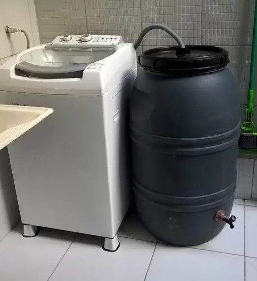

AS EVOLUÇÕES
As máquinas de lavar roupa variam em consumo de água dependendo do modelo, marca e capacidade. No entanto, em média, uma máquina de lavar roupa convencional pode gastar entre 40 a 180 litros de água por ciclo de lavagem. A técnica de reutilização de água com barris pode ser uma forma eficaz de reduzir o consumo de água da máquina de lavar roupa. Ao invés de utilizar água potável para cada ciclo de lavagem, a água é reutilizada em diversos ciclos, reduzindo assim o consumo de água.
Voltar pagina 1 Ler Mais
